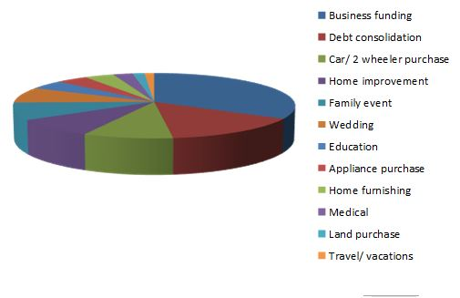

When the Internet first introduced itself to the masses in India, very few could ascertain that it would go where it finally did. The Indian automobile sector performed likewise wherein Uber and Ola accelerated at neck-breaking speed to catch up in the game. In the same vein, with technology and regulations taking center stage in the financial world, traditional lenders (think big banks and deep pocketed finance institutions) may soon take a bow to crowd funding, peer-to-peer lending and other revolutionary means of financing companies, startups and individuals.
Such is the power of disruptive technology!
But then, walking headlong into a dark pit is not what this sector is aiming at – it is looking for calibrated growth fueled by steady steps, credible borrowers and lenders and well-conceived strategies.
Nowhere similar to banks and NBFCs building up their loan accounts, still Faircent.com has grown over eight times in terms of personal loan disbursals in the last 6-8 months……… and there are no signs of this pace slackening in future.
The interesting thing about the P2P financing world is that it is not just limited to business loans or personal loans. In 2016 itself, numerous startups, commercial loan providers, loan comparison platforms, consumer loan providers, housing loan companies, and a host of others interested in lending/borrowing loans at attractive rates have joined the bandwagon. This across-the-sector growth is gradual, steady and based on real economics. It’s neither skewed nor just a passing fancy for those looking for easy ways of fulfilling their entrepreneurial ambitions.

Till date, the Indian P2P space stands unregulated but there is still no evidence of fraudulent operators tarnishing its credibility; thus there is scope of greater structured growth with RBI regulations expected to be announced soon. Also, unlike in the West, where there is a change in consumption patterns as a result of dismal economic conditions, India is still nurturing a strong demand for goods and services that is being met to a large extent via P2P borrowings. The same rings true for startups getting business loans from peer-to-peer lending platforms without running from pillar to post; as was common just a few years back.
‘Pushing Boundaries – The 2015 UK Alternative Finance Report’ chronicles the efforts of researchers at the University of Cambridge and Nesta. It looks at the market development in various sectors of alternative finance. The graph below depicts how P2P consumer and business lending gave tough competition to all other means of alternate financing in 2015.

In India too, P2P lending has received a tremendous response from buyers and lenders looking for better-pegged technology-enabled platforms. For instance, in the last six months itself, Faircent - largest P2P lending platform in India, has received loan requests to the tune of 8+ crores – financed by more than 6000 registered lenders! Definitely, the P2P buzzword is turning into well-measured rage, and is certainly here to stay.
Sources:
http://economictimes.indiatimes.com/topic/peer-to-peer-lending
https://www.theguardian.com/money/peer-to-peer-lending
http://www.p2p-banking.com/tag/study/